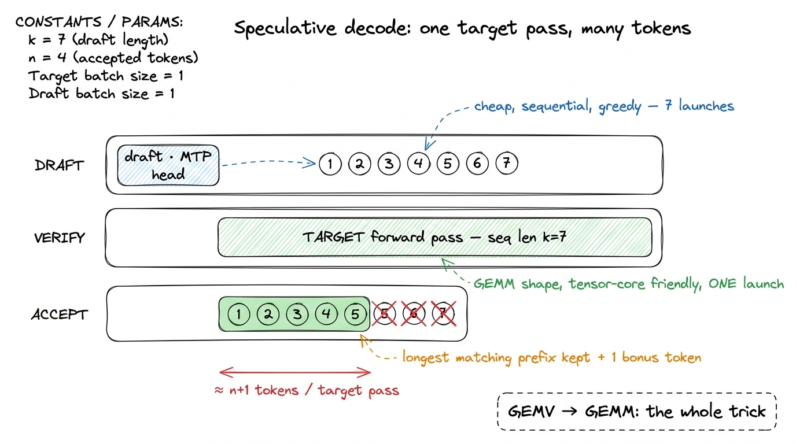
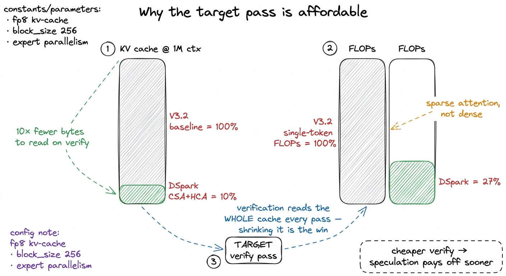
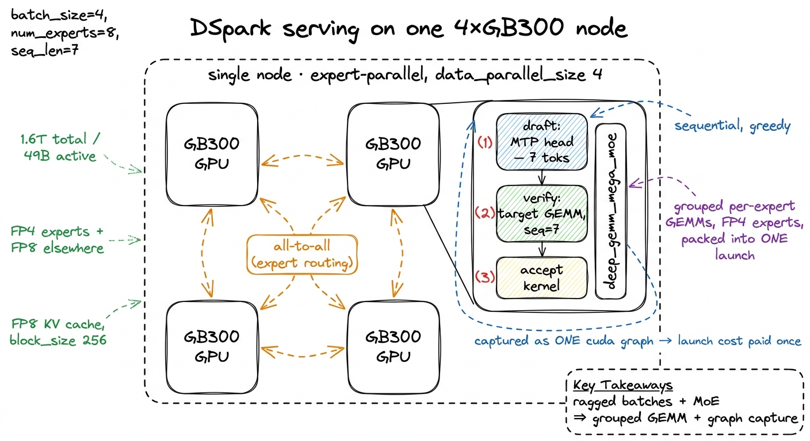
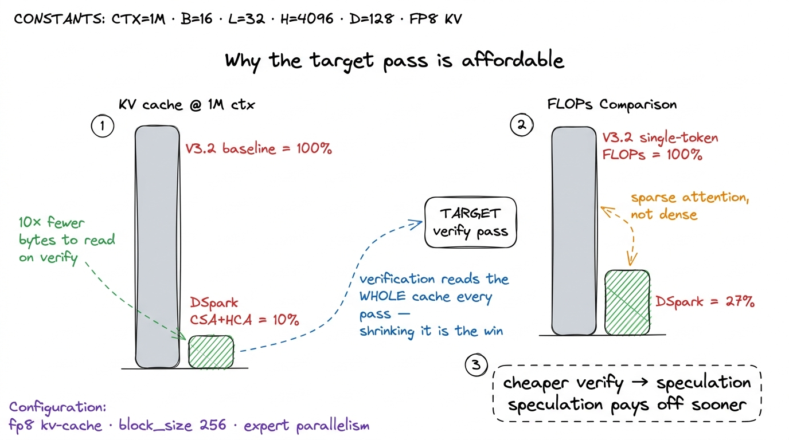
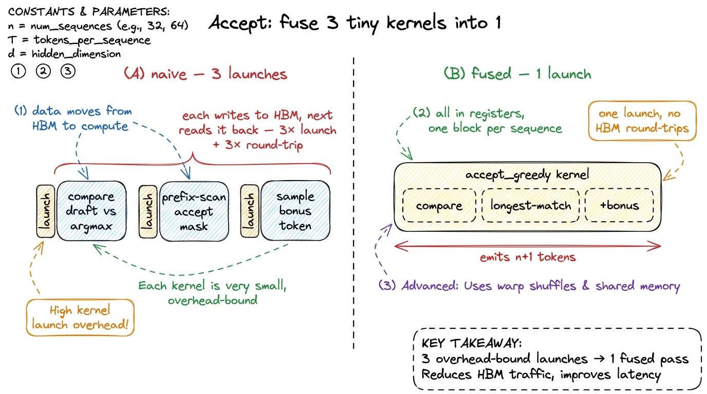
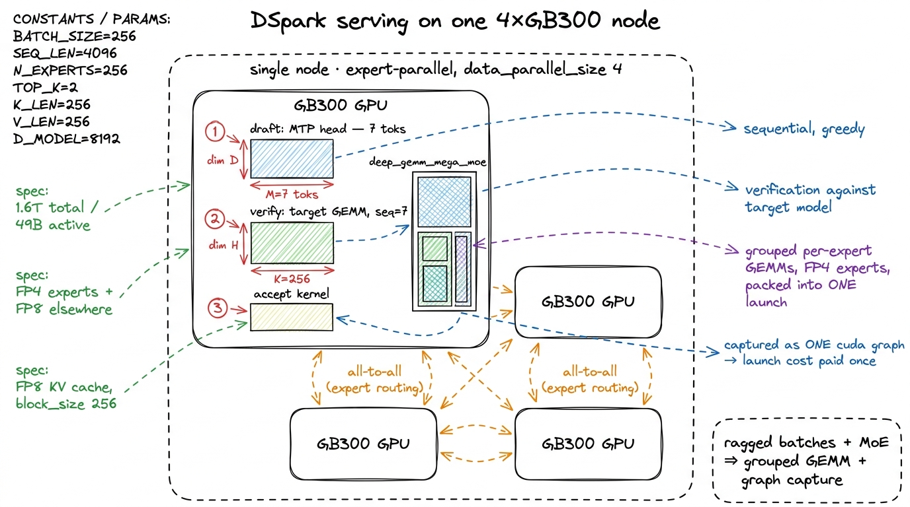
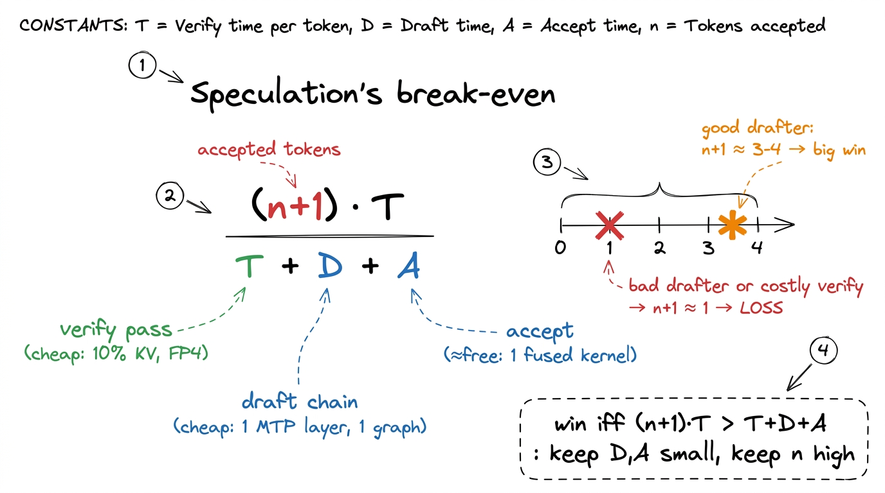

DSpark: speculative decoding as a kernel problem DSPARK
Everything on this site so far has been about making one kernel go faster. Speculative decoding is the first optimization on the ladder that is not a kernel at all — it is an algorithm for spending FLOPs you already have on tokens you might not keep. And yet, the moment you try to serve it, it collapses back into a pile of the most kernel-shaped problems you have ever seen: launch latency, occupancy, ragged batches, and a verification step that either coalesces or does not. DeepSeek-V4-Pro-DSpark is the cleanest recent example of this collapse, so it is what we will use to think it through.1 DSpark is the V4-Pro checkpoint (1.6T total / 49B activated, 1M context) with a speculative-decoding module bolted on, published as an inference-optimized variant rather than a new base model. Everything here follows its model card; where the card is silent — and it is silent on acceptance rates and tokens/second — I say so.
Before any of that, let me answer the question you should be asking: what problem is speculative decoding even for? If you have read batched decode or prefill vs decode, you already know the shape of the pain, but let me rebuild it from zero so a newcomer can start right here.
The one fact that makes all of this necessary
A language model writes text one token at a time. You give it a prompt, it emits one token; you glue that token onto the prompt, feed the whole thing back in, and it emits the next; and so on until it decides to stop. A 200-token answer is 200 forward passes through the entire network, each one waiting on the last. This serial phase is called decode, and it is where a served model spends nearly all of its life.
Here is the part that stings. A single forward pass through a 1.6-trillion-parameter model — even one that activates only 49 billion of those parameters per token — produces exactly one token. You dragged tens of gigabytes of weights across the memory system, lit up the tensor cores for a fraction of a microsecond, and got back a single integer. Then you do it again. And again.
So the natural question, the one this whole article answers, is: can we get more than one token out of a single expensive pass? It sounds impossible — the model is autoregressive, token i+1 genuinely depends on token i, you cannot know the future. Speculative decoding is the surprisingly-legal way to do it anyway. Let me build the intuition before we touch a kernel.

figure rendering · The whole idea in one picture. A cheap model guesses a burst of tokensThink of it like a fast intern and a slow expert. The intern (a small, cheap drafter) scribbles a guess for the next several words. The expert (the real 1.6T model, the target) then reads the intern's whole guess in one sitting and, crucially, checks every position at once — a thing it can do because it already has all the guessed tokens in hand, so there is no waiting-on-the-previous-one. Wherever the intern got it right, the expert keeps the guess for free. At the first mistake, the expert overrules, and we start the next burst.
That is the entire trick, and it hinges on a shape change we will return to constantly. Plain decode multiplies a giant weight matrix by a single activation vector — a general matrix-vector product (GEMV), no reuse, pinned against memory bandwidth. Checking k guessed tokens at once multiplies that weight matrix by k vectors stacked into a matrix — a GEMM, the fat multiply the tensor cores were built for. Speculative decoding turns a memory-bound GEMV into a throughput-friendly GEMM. Hold that sentence; it is the pebble the whole article balances on. In the language of the three regimes, decode is memory-bound (waiting on HBM) and verification is compute-bound (waiting on the tensor cores) — speculation is a deliberate move from the first regime to the second.
Why decode is memory-bound, in bytes
Let me make "memory-bound" concrete, because the entire economics of speculation lives here. On an H100 you have about 989 TFLOP/s of BF16 tensor throughput and about 3.35 TB/s of HBM3 bandwidth. Divide them: the machine can do roughly 295 FLOPs for every byte it reads from memory. That ratio — call it the machine's break-even arithmetic intensity — is the line between the two regimes.
Now price a single decode step at batch size one. You read the active weights — on the order of 49B parameters, say 2 bytes each in BF16, so ~98 GB moved — and you do about 2 × 49B FLOPs of useful math (one multiply, one add per parameter). That is an arithmetic intensity of two FLOPs per byte. Two, against a machine that wants 295. You are using well under 1% of the tensor cores and 100% of the memory pipe. The Ferrari is stuck in the parking lot.2 The exact numbers depend on precision and how much of the KV cache you touch, but the ratio is what matters and it is off by two orders of magnitude. This is why decode latency barely improves with a faster tensor core and improves a lot with faster memory or a smaller footprint — the exact reason FP4 experts and a 10%-sized KV cache matter so much for DSpark specifically.
So the lever is obvious once you see the ratio. You cannot make the math faster — there is barely any math. You have to either move fewer bytes, or extract more useful tokens from each byte-moving pass. Speculation does the second: the target pass moves the same ~98 GB whether it checks one token or seven, so if you keep several of the seven, you amortized that fixed memory cost across several tokens. The bytes were going to move anyway. Speculation just gets more tokens out of them.
Now let us build the machine, stage by stage, the way a real serving loop runs it.
Stage one: the draft forward passes
The draft has to be cheap or the whole scheme is pointless — every FLOP spent drafting a token you later reject is pure loss. DSpark's vLLM recipe configures the speculative module for num_speculative_tokens: 7 with draft_sample_method: "greedy", launched with --speculative-config '{"method":"dspark","num_speculative_tokens":7,"draft_sample_method":"greedy"}'. Seven proposed tokens per target pass is aggressive; it only pays off because the drafter is tightly coupled to the target and the acceptance rate stays high.
Here is the tension I did not appreciate until I profiled it. Drafting is inherently sequential — the intern writes word i+1 only after word i — so you cannot batch the seven draft steps into one GEMM the way you can with verification. Each draft step is its own tiny launch. And a tiny launch is a trap.
Why a trap? Let's think about what the hardware is really doing. A CUDA kernel launch is not free: you cross the PCIe boundary, the driver builds a launch packet, the GPU's front end schedules the grid. That fixed cost is on the order of microseconds. If the actual work inside the kernel also takes a few microseconds — which a single-token draft step does — then you are spending as much time launching as computing. This is the overhead-bound regime: the third of the three regimes, where you are waiting on the launch queue, not on math or memory. Seven sequential draft launches means paying that overhead seven times.
So what does DSpark do about the drafter itself? It uses the DeepSeek-family standard: a single-layer Multi-Token Prediction (MTP) head, trained alongside the target. The MTP head reuses the target's own hidden state, so one draft step is close to one extra transformer layer of work rather than a whole separate model forward. Cheap intern, and one who thinks like the expert — which is exactly why its guesses get accepted often.
Conceptually the draft loop is nothing more than:
# draft: sequential, cheap, greedy — captured as ONE cuda graph
draft_tokens = []
h = target_hidden_state # reuse the target's last hidden state
for _ in range(num_speculative_tokens): # 7
logits = mtp_head(h) # ~one transformer layer of work
tok = logits.argmax(-1) # greedy: no sampling kernel needed
draft_tokens.append(tok)
h = mtp_head.step(h, tok) # advance the draft stateThe argmax matters more than it looks. Greedy drafting means the draft path needs no sampling kernel — no Gumbel noise, no top-p sort, no CDF walk. Each of those is an extra launch and an extra dependency in the graph, and skipping them on the hot draft path is why greedy is the default here rather than a compromise. Greedy on the draft side is not the same as greedy on the output: the target can still sample at a temperature, the drafter just proposes its single most-likely token as the guess to check, and the acceptance test (stage three) is what preserves the target's true sampling distribution.
And the fix for the seven launches is the overhead-regime fix from kernel launch anatomy: fuse them. Full-graph capture with CUDA graphs — which DSpark's config enables (FULL_AND_PIECEWISE) — records the entire seven-step draft chain once and replays it as a single submitted graph. You pay launch latency one time instead of seven.

figure rendering · The overhead-bound fix. Seven tiny sequential draft steps are dominateStage two: parallel verification
Now the good part. You hand the target model the current sequence plus all seven drafted tokens and ask it to produce, in a single forward pass, the distribution it would have produced at each of those positions. Because you already have all the input tokens in hand, there is no sequential dependency — you process positions 1..k in parallel. That is a GEMM of sequence length k, which is precisely the shape the tensor cores want.
Let me slow down on why this is legal, because it is the step people find surprising. In plain decode you cannot compute position 3 before position 2, because position 3's input is position 2's output — you do not know it yet. In verification you already have candidate tokens for every position (the intern wrote them all down). So you can feed all of them in at once and ask the target, "assuming the sequence really were ...t1 t2 t3..., what would you predict at each spot?" The target answers all positions in one shot. You are not predicting the future; you are grading a completed exam.
The subtlety that trips people up is the attention mask. Position i may only attend to the real context plus the drafted tokens strictly before it, so verification runs a standard causal mask over the drafted block and every position gets the target's honest next-token distribution as if that prefix were real. Get the mask wrong and you leak future draft tokens backward, the acceptance test silently passes garbage, and your outputs diverge from plain autoregressive decode in ways that are miserable to debug.3 This is the same causal masking you meet in naive attention, just applied to a small appended block instead of a full sequence. The one bug I have watched cost a full day is an off-by-one that lets position i peek at draft token i (its own answer), which makes acceptance look fantastic in a benchmark and wrong in production.

figure rendering · Verification zoomed in. All seven positions are graded in one parallelFor DSpark this verification pass is where all the model's architectural frugality earns its keep. The target attention is the hybrid Compressed Sparse Attention (CSA) plus Heavily Compressed Attention (HCA) scheme, which at a 1M-token context needs only 27% of the single-token inference FLOPs of DeepSeek-V3.2 and, just as importantly, 10% of the KV cache.4 The FLOP and cache reductions are the model card's figures at 1M context, measured against V3.2; at shorter contexts the sparse-attention advantage shrinks because the dense-attention baseline was never the bottleneck there.
The KV number is the one that matters for spec-dec, and it is worth doing the arithmetic out loud. Verification reads the entire KV cache — every past token's keys and values — to attend over the context. That read is memory traffic, and from the ratio above, memory traffic is the binding constraint. So a cache one-tenth the size is one-tenth the bytes to drag across HBM3 on every target pass. A memory-bound step over a cache you shrank by 10× finishes roughly 10× sooner. The FLOP cut helps too, but the byte cut is the one that moves the wall-clock, because the verify pass was memory-bound to begin with. And DSpark stacks a second byte cut on top: it stores the KV cache in FP8 (--kv-cache-dtype fp8), roughly half the bytes per cached element versus BF16. The two multiply — fewer entries from sparsity, and fewer bytes per entry from FP8.

figure rendering · The sparse-attention budget. A 10%-sized, FP8 KV cache is what makes tWhy do I keep hammering that "pays off sooner" point? Because speculation is not free — you added a drafter, an acceptance kernel, extra launches. If the verify pass were just as expensive as a plain decode step, you would have paid all that overhead to save nothing. The cheap verify pass is what tips the arithmetic positive. Which brings us to the step that decides how many tokens you actually keep.
Stage three: the acceptance-sampling kernel
This is the step that is easy to get subtly, dangerously wrong, and it is a real kernel. After verification you have, for each of the seven positions, the drafter's proposed token and the target's true distribution at that position. You walk the draft left to right and accept token i only if it survives the acceptance test against the target distribution; the first rejection truncates the run, and you append one bonus token sampled from the corrected residual distribution at the rejection point.
The guarantee that makes speculative decoding respectable — not a cheap approximation but a free lunch — is that this procedure produces a sequence distributed identically to plain autoregressive sampling from the target. You get exactly the target model's outputs, only faster. That is the property that lets you turn it on in production without changing what the model says.5 For greedy drafting the accept test collapses to a plain equality check — accept the draft token iff it equals the target's argmax — which is why the DSpark recipe pairs draft_sample_method: "greedy" with the simplest possible acceptance kernel. Full speculative sampling with a temperature needs the residual-distribution correction (accept with probability min(1, p_target/p_draft)); greedy does not.
As a kernel this wants to be one fused pass over the k positions that does the comparison, finds the longest accepted prefix, and emits the bonus token, all in registers, with one launch per sequence. The naive version — a separate launch for the compare, another to prefix-scan the accept mask, another to sample the bonus token — is a textbook overhead-bound mistake: three tiny launches dominated entirely by launch latency, exactly the trap we already met with the drafter. Fusing them into one kernel is the difference between acceptance sampling being free and it eating your speculative savings alive.

figure rendering · Fusing acceptance. Three tiny launches that bounce through HBM becomeHere is that fused kernel for the greedy case, which is what DSpark ships:
// per sequence in the batch: fuse compare + prefix-scan + bonus sample.
// greedy draft ⇒ accept iff draft token == target argmax at that position.
__global__ void accept_greedy(const int* draft, const int* target_argmax,
int* out_tokens, int* out_len, int k) {
// one block per sequence; threads cooperate over the k positions
int n = 0;
while (n < k && draft[n] == target_argmax[n]) ++n; // longest match
for (int i = 0; i < n; ++i) out_tokens[i] = draft[i];
out_tokens[n] = target_argmax[n]; // +1 bonus token
*out_len = n + 1;
}The shape of the win falls straight out of this. If you accept n of the drafted tokens, you have produced n + 1 real tokens from a single expensive target pass — the n you kept, plus the one bonus token the target hands you for free at the truncation point.6 The +1 is not a rounding detail; it is why speculation still wins even when acceptance is mediocre. Even if you accept zero draft tokens on a step, the bonus token means you still emitted one real token — exactly what plain decode would have done. So a wrong guess costs you the draft compute, never a token. The downside is bounded; the upside is not. With a well-matched MTP drafter, acceptance runs high enough that the effective tokens-per-pass climbs to several, and since the target pass was the only expensive thing you did, your decode latency drops by roughly that same factor. That factor — average accepted length plus one — is the single number that decides whether the whole scheme was worth building.
Stage four: batching, where it all interacts
None of the above lives in isolation on a real server. DSpark's reference deployment is deep_gemm_mega_moe on a single 4×GB300 node — one node holding four GB300 GPUs — with expert parallelism (--enable-expert-parallel, --data-parallel-size 4), an FP8 KV cache at --block-size 256, and full CUDA-graph compilation. Every one of those choices exists to keep the pipeline from stalling, and they interact in ways that are pure kernel engineering.
The hard interaction is that speculation makes batches ragged. Think about what happens after the acceptance kernel: every sequence in the batch accepted a different number of tokens. One sequence keeps six, its neighbor keeps two, a third keeps zero-plus-bonus. So the sequences are now at different lengths and want different amounts of work on the next draft. Ragged batches are the enemy of tensor cores, which love uniform, rectangular work.
A Mixture-of-Experts (MoE) model makes this worse, and I want to unpack why because it is not obvious. With 1.6T total parameters routed down to 49B active, each token does not go through all the weights — a router picks a small subset of "experts" (small MLPs) for each token. So in the verification batch, token A might route to experts {3, 17}, token B to {3, 92}, token C to {41, 55}. Each expert therefore has a different, data-dependent number of tokens to process. The per-expert matrix multiplies are themselves ragged: expert 3 has a fat batch, expert 92 has a thin one, most experts have none. If you launched one GEMM per expert, you would drain and refill the tensor cores hundreds of times, most launches nearly empty.
This is exactly what a grouped / mega GEMM backend is for. deep_gemm_mega_moe packs the variable-sized per-expert multiplies into one launch and keeps the tensor cores fed instead of draining and refilling between experts.7 This is the same DeepGEMM family from FlashMLA & DeepGEMM — a grouped FP8 GEMM that takes a list of ragged per-expert problem sizes and schedules them as one launch. The model card putting deep_gemm_mega_moe in the serve command is the tell that, for a model this shape, the kernel is the product surface. With experts split across the four GB300s, routing also incurs an all-to-all exchange to ship each token's activations to whichever GPU holds its experts and back — more small operations piled onto the pile.
And the experts themselves are stored in FP4. The MoE expert weights are e2m1-style 4-bit floats while most of the rest of the model is FP8 — the model card's "FP4 + FP8 Mixed."8 The FP4 experts exist for the same reason as the shrunken KV cache: fewer bytes per active parameter moved across HBM per token, which is the binding constraint in decode. Halving the expert footprint versus FP8 roughly halves the dominant memory traffic of the verify pass. If you want the mechanics of a 4-bit format that still stays accurate, see NVFP4 microscaling — the numbers are so coarse they only work because a shared scale rides alongside each small block. Same lever as everything else on this page: move fewer bytes, because bytes are what you are waiting on.
Then the whole thing — draft steps, verify, accept, bonus sample, the cross-GPU all-to-all — is captured as a CUDA graph. Because speculation multiplies the number of distinct small launches, the fixed launch cost is a first-order term, not a rounding error. Full-graph capture replays the entire draft-verify-accept cycle as one submitted graph per step: the difference between the GB300 tensor cores being busy and them waiting on the launch queue. It is the overhead-regime playbook from the three regimes, applied to an entire decoding step rather than one kernel.

figure rendering · The full serving picture. Speculation, MoE routing, and expert parallePutting a number on the whole thing
Let me close the loop with the napkin math for one decode step, so the payoff is not just a vibe. Say the target verify pass costs T microseconds — dominated by dragging the (now 10%-sized, FP8) KV cache and the 49B active FP4/FP8 weights across HBM. The seven-step draft chain, captured as one graph, costs some D, and the fused accept kernel costs a negligible A. Plain decode would spend T per token. Speculation spends T + D + A and, if you accept n tokens, produces n + 1 of them.
So the speedup is (n+1) · T / (T + D + A). Two things have to be true for that to exceed one. First, D and A must be small relative to T — which is why we fused the draft launches into a graph, made drafting one MTP layer, and used a greedy accept kernel. Second, n must be reliably above zero — which is why the MTP head is trained with the target so its guesses land. When both hold, (n+1) might be, say, 3 or 4 effective tokens per pass, and the fraction lands comfortably above one. When either fails — a bloated drafter, or a verify pass no cheaper than plain decode — the fraction dips below one and you have built an elaborate machine that runs slower than the naive loop.

figure rendering · The economics on one napkin. Speculation wins only when the draft andWhere this leaves us
Step back and the pattern is the same one the GEMM ladder taught us, only larger. We started with a latency-bound GEMV, formed a hypothesis — draft cheaply, verify in a batch — that reshapes it into a throughput-friendly GEMM, and then found that every practical win came from the same three levers we have pulled since kernel 1: coalesce the memory traffic (a 10% KV cache, FP4 experts, FP8 everywhere else), fuse the launches (greedy drafting, a single acceptance kernel, full-graph capture), and keep the tensor cores fed across ragged work (grouped mega-MoE GEMMs).
Speculative decoding is not an escape from kernel engineering. It is kernel engineering with a wider aperture — the same predict-the-regime, measure, fuse loop, now spanning a four-GPU node instead of a single SM. The instinct you built on one tile of one matrix is the same instinct that tells you a seven-step draft chain wants to be one graph, that a verify pass over a 10%-sized cache is the whole reason the arithmetic closes, that a ragged MoE batch wants a grouped GEMM. Same questions, bigger canvas: what is it waiting on, and can I make it wait less?
The honest caveat to close on: speculation only nets out positive when the acceptance rate is high enough that the effective tokens-per-pass exceeds the overhead you added. A badly matched drafter, or a verify pass no cheaper than a plain decode step, and you have built an elaborate machine that runs slower than the naive loop. DSpark is a real point where the arithmetic works — a 10% KV cache and FP4 experts make the verify pass genuinely cheap, and a trained MTP drafter keeps acceptance high — which is why it is worth studying rather than admiring from a distance. The model card gives you the levers (the config flags) but not the outcome (acceptance rate, tokens/second); those you would measure on your own fleet, the same way you would profile any kernel before believing it.